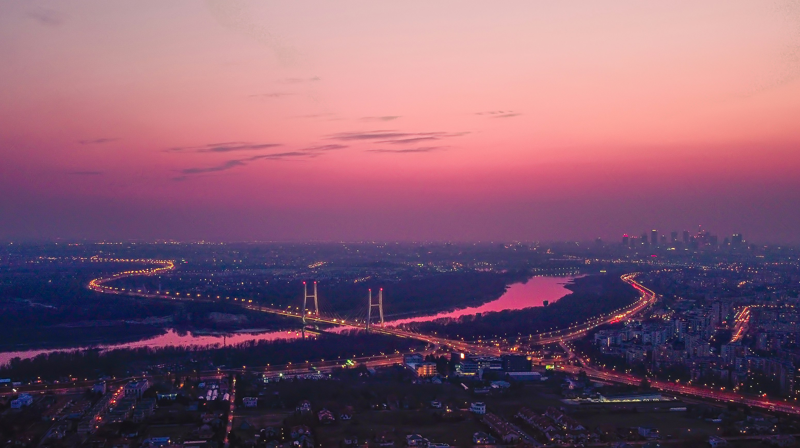
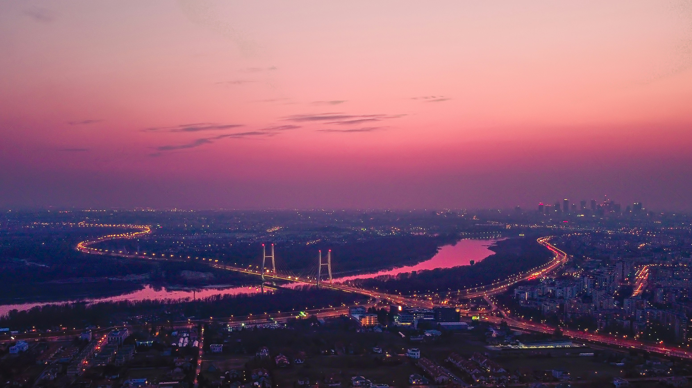

Atrakcje w Warszawie
W Warszawie nie brakuje atrakcji turystycznych. Oprócz historycznych zabytków, takich jak Zamek Królewski czy Stare Miasto, warto odwiedzić nowoczesne centra kulturalne, takie jak Centrum Nauki Kopernik. Dla miłośników sztuki idealnym miejscem będzie Muzeum Narodowe oraz liczne galerie sztuki. Dla rodzin z dziećmi polecamy wizytę w warszawskim zoo lub w parkach tematycznych.
Spacerując po Warszawie, warto odwiedzić ogrody Saski i Ujazdowski, które oferują spokojne miejsce do odpoczynku z dala od zgiełku miasta. Wieczorem miasto ożywa dzięki wielu koncertom, spektaklom i festiwalom, które odbywają się przez cały rok. Warszawa jest również znana z licznych targów i bazarów, gdzie można kupić unikalne produkty i pamiątki.

Zamek Królewski
Zamek Królewski w Warszawie to jeden z najważniejszych zabytków w Polsce. Siedziba królów Polski oraz miejsce podpisania Konstytucji 3 Maja. Zamek oferuje bogatą kolekcję dzieł sztuki oraz wystawy tematyczne.

Warszawkie Zoo
Warszawskie Zoo, oficjalnie znane jako Miejski Ogród Zoologiczny w Warszawie, znajduje się na warszawskiej Pradze, przy ulicy Ratuszowej. Otwarty w 1928 roku, jest jednym z najstarszych ogrodów zoologicznych w Polsce. Zoo zajmuje powierzchnię około 40 hektarów i jest domem dla ponad 12 tysięcy zwierząt, reprezentujących około 500 gatunków. Można tu zobaczyć zarówno rodzime gatunki, jak i egzotyczne zwierzęta z różnych zakątków świata, w tym słonie, lwy, żyrafy, oraz wiele gatunków ptaków i gadów. Zoo oferuje liczne atrakcje edukacyjne i rekreacyjne dla odwiedzających w każdym wieku.
{kind=link}
Pałac Kultury i Nauki
Pałac Kultury i Nauki to najwyższy budynek w Polsce i jeden z symboli Warszawy. W jego wnętrzach znajdują się teatry, kina, muzea oraz taras widokowy, z którego roztacza się widok na całą stolicę.
{kind=link}
Muzeum Narodowe
Muzeum Narodowe w Warszawie posiada jedną z najbogatszych kolekcji sztuki w Polsce. W jego zbiorach znajdują się dzieła sztuki polskiej i światowej, od starożytności po współczesność.
{kind=link}
Łazienki Królewskie
Łazienki Królewskie to zespół pałacowo-parkowy, który jest jednym z najpiękniejszych miejsc w Warszawie. Na terenie parku znajdują się Pałac na Wyspie, Teatr na Wyspie oraz wiele innych zabytkowych budynków.
{kind=link}
Muzeum Powstania Warszawskiego
Muzeum Powstania Warszawskiego to miejsce upamiętniające jedno z najważniejszych wydarzeń w historii Warszawy. Ekspozycje prezentują historię powstania z 1944 roku poprzez zdjęcia, filmy, relacje świadków oraz interaktywne wystawy.
{kind=link}
Centrum Nauki Kopernik
Centrum Nauki Kopernik to jedno z najnowocześniejszych centrów nauki w Europie. Oferuje interaktywne wystawy, warsztaty oraz pokazy naukowe, które angażują i edukują odwiedzających w każdym wieku.